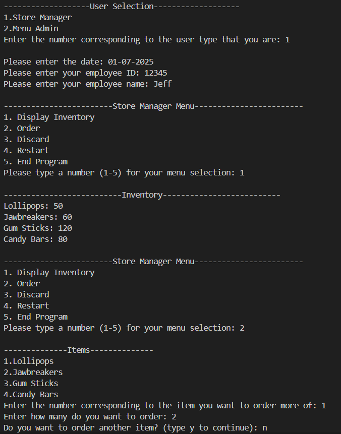
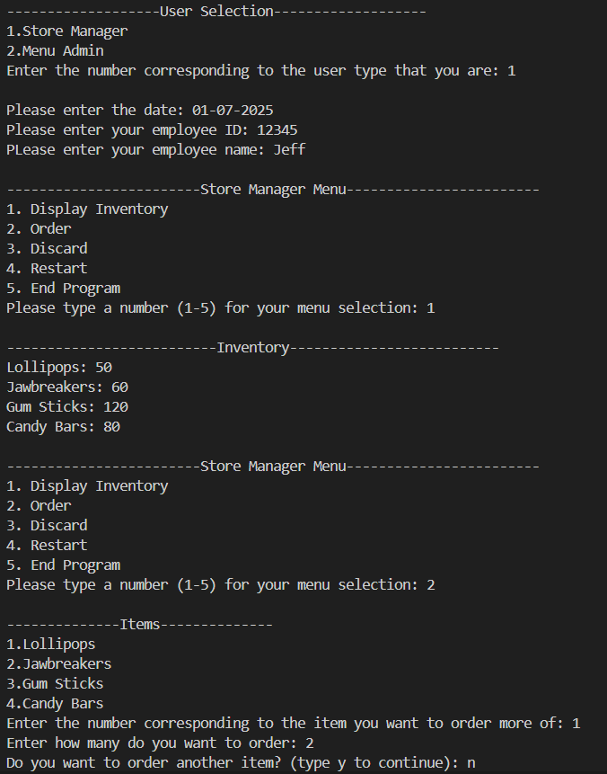

College Projects
Fake Store Website
- Skills Utilized: HTML, CSS, JavaScript
- Description:
Cumulative project for CSCI 120 at Coastal Carolina University. Utilized HTML, CSS, and JavaScript to create a
fake store website with fake forms to fill out.


Fake Store Inventory Program
- Skills Utilized: Python, Object-Oriented Programming, UML
- Description:
Cumulative project for CSCI 145 at Coastal Carolina University. Utilized Python to simulate a store inventory management
system. Allowed for two different users that could modify the store's inventory.
 

Checkers in Java
- Skills Utilized: Java, UML, Design by Contract, Coding in Teams, Code Review, JavaDocs
- Description:
Cumulative project for CPSC 2150 at Clemson University. Utilizes UMLs, JavaDocs, Contracts, Java, design by contract,
Junit testing, and working in teams. The program is a Checkers program which has board that can be resized to 8x8, 10x10,
12x12, and 16x16 and players can select the character they want their piece to be represented as. All output and input
is from the terminal.